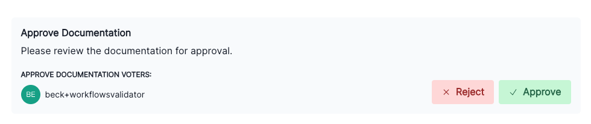
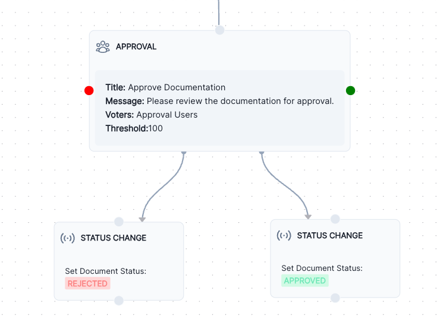

Set up model workflows
Workflows can be configured to match your organizational needs for overseeing model development, validation, or implementation activities.
To set up a workflow, you’ll need to complete these two steps in sequence:
Prerequisites
Configure workflow steps
To add or edit workflow steps:
In the left sidebar, click Settings.
Under Workplace Settings, select Workflows.
Click on Inventory Model:
- To add a step, drag and drop a new step onto the canvas. Hover over the step until the menu appears, then click on it and select Configure.
- On the new step, click Configure.
After you’re finished with step configuration, click Save to apply your changes before closing the configuration panel with .
Workflow step configuration After you’ve configured a step, you can then link your workflow together.
{kind=link}
Available step types
Status Change
- Transitions a status.
- Requires available model lifecycle statuses associated with the workflow.3
| Field | Description |
|---|---|
| when these conditions are met (optional) | Add conditional requirements to qualify for this step.4 |
| set status to | Select the status to transition to. |
User Action
- Creates a button that performs an action on behalf of the user.
- Requires available model lifecycle statuses associated with the workflow.5
| Field | Description |
|---|---|
| display action button when (optional) | Add conditional requirements for displaying this step.6 |
| action button label | Text that displays on your action button. |
| request fields (optional) | Include inventory fields alongside your action if desired. Select the field, then click + Add Field to insert.7 |
| to set status | Select the status to transition to. |
{kind=link}
{kind=link}
{kind=link}
{kind=link}
Approval
- When your resource reaches the approval step, roles or users in the selected Approval Group will receive your configured message.
- Requires either a User Role8 or User Type inventory field9 to select from, and must be connected to both an approval and rejection Status Change step.10
| Field | Description |
|---|---|
| approval group | Select the User Role or User Type inventory field that indicates roles or users responsible for approval. |
| threshold | Percentage of approvers required for the resource to be approved.11 |
| approval message | When your resource reaches this approval step, the users in the selected group will recieve the following message. |

{kind=link}
- Example
-
A message shown to the user type inventory field
Approval Groupusers requesting approval of model documentation.
Condition Branch
- Allows diverging paths based on conditional requirements.
- A
defaultbranch will be automatically included as a catch-allelsepath to ensure that your conditional logic is complete.
Workflows cannot be saved until condition branches are connected to other steps.
To configure a condition branch:
On the Configure Condition Branch module, click + Add Branch.
Enter in the name and designate the conditions12 that apply to this path.
Continue with steps 1 and 2 until your conditional branch logic is complete.
To remove a path, click and select Remove Path.
When you are finished setting up all your branch paths, click Update Step to save your step.
Proceed with linking the Condition Branch with your subsequent steps.13
For example, if you wanted your models where the field GenAI Model is set to true to undergo a special legal approval process:
- First, you’d set up a Condition Branch path to look for instances where
GenAI Modelis set totrue. - Then, you would add an Approval step14 that requests a review of the model from the User group
Legal Team. - Finally, configure the
defaultpath to bypass this special approval.
{kind=link}
true{kind=link}
{kind=link}
Add conditional requirements
Conditional requirements can be configured for all four available step types:
| Step type | Conditional options |
|---|---|
| Status Change | Under when these conditions are met, you are able to set both AND and OR conditions. |
| User Action | Under display action button when, you are able to set both AND and OR conditions. |
| Approval | Under threshold, you are able to set the minimum percentage of approvers required for the resource to be approved. |
| Condition Branch | Under each branch’s conditions, you’re able to designate the conditions that apply to that path. |
For Status Change15, User Action16, and Condition Branch17 conditions, you’re able to add a single independent Rule or a linked condition Group. These rules and groups can be nested if desired:
- Click Rule to add an independent rule.
- Click Group to add a linked group of rules that all must be true to qualify.
Link workflow together
To initiate the beginning of your workflow:18
Locate the Start of your workflow.
Drag from the period (.) at the bottom of Start to the top on the first step of your workflow.
Link steps together
To link subsequent steps together:
Click above or below the earlier step and drag it to connect to the top on the subsequent step.
You’re also able to link several different steps together at various points in the workflow, including stages that may circle back to previous steps:
Multiple steps linked together at various points in the default Inventory Model workflow When you are finished, click Save Workflow to apply your changes.
{kind=link}
Link approval steps
Approval steps need to be subsequently linked to both a Rejected and an Approved Status Change step:
First, configure an Approval step.19
Then, drag two Status Change steps onto the canvas:20
- Assign a
Rejectedstatus to one in the Set Document Status field. - Assign an
Approvedstatus to the other in the Set Document Status field.
- Assign a
Connect the Approval step to the Rejected and Approved Status Change steps with the red and green respectively by dragging from the colored to the top of the subsequent step.

Delete workflow steps
Hover over the step until the menu appears, then click on it.
Select Delete.
On the confirmation dialogue that appears, select OK to confirm deletion.
When you are finished, click Save Workflow to apply your changes.
Remove links between steps
Hover over a connection until the appears.
Click to delete the connection.
On the confirmation dialogue that appears, select OK to confirm deletion.
When you are finished, click Save Workflow to apply your changes.
What’s next
Footnotes
Status Change steps↩︎
Status Change steps↩︎
User Action steps↩︎
Condition Branch steps↩︎
After you’ve configured your workflow steps, you can then link your workflow together.↩︎
- ↩︎
Status Change steps↩︎